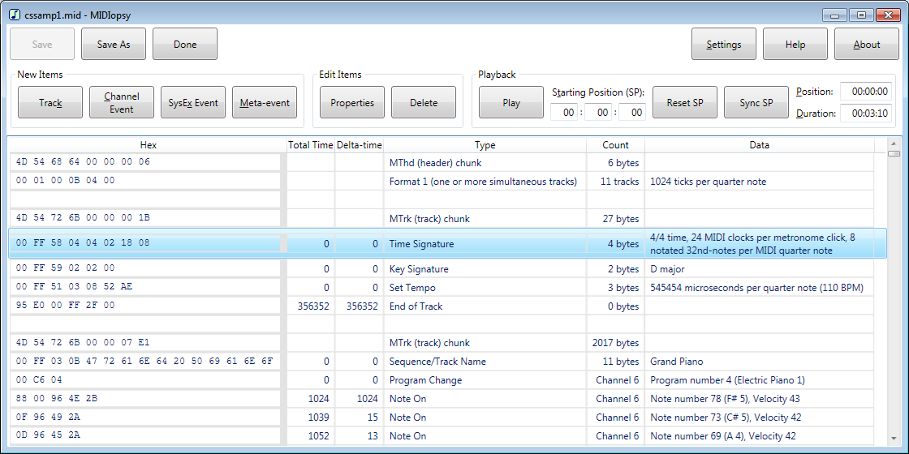

MIDIopsy is a Windows application (written in C#) that is used to view, edit, and play standard MIDI (musical instrument digital interface) files. It is free, open-source software (FOSS), distributed under the MIT License. (In a nutshell, you can do whatever you want with it, so long as it retains the copyright notice.)
The only requirement for MIDIopsy is .NET Framework 3.0 (or higher). If you have Windows Vista or later, you already meet this requirement. Otherwise, check to see which versions of .NET Framework are installed. If you do not already have it, download and install .NET Framework version 3.0 (or higher) before running MIDIopsy.
